Numerical Modeling of Heat & Mass Transfers in Stefan-type Flows Using a Sharp Interface Two-Fluid Formulation
L. Libat, E. Chénier, C. Selçuk, V. Le Chenadec
Multiscale Modeling and Simulation Laboratory, CNRS MSME UMR 8208, Gustave Eiffel University
May 5, 2025
Introduction
Context & Challenges
- Interfacial Flows: Two immiscible phases separated by a sharp interface
- Phase Change: Solid ⇄ liquid, limited by latent heat or diffusion
- Applications: Material processing, ice melting, crystal growth …
Stefan-type Problems
- Classical phase change problems where a moving boundary separates phases
- Interface position \(s(t)\) depends on heat fluxes \(k_p \nabla T_p\) \[ \begin{aligned} &\text{Find $T_s$, $T_l$ and interface position $s(t)$ such that:}\\ &\partial_t T_s - \alpha_s\nabla^2 T_s = 0 \quad \text{in solid phase}\\ &\partial_t T_l - \alpha_l\nabla^2 T_l = 0 \quad \text{in liquid phase}\\ &\rho L\dot{s} = k_l\nabla T_l \cdot \mathbf{n} - k_s\nabla T_s \cdot \mathbf{n} \quad \text{at interface}\\ &T_s = T_l = T_m \quad \text{at interface}\\ \end{aligned} \]

Cut Cell Method for static interfaces
Two-Fluid Formulation Philosophy
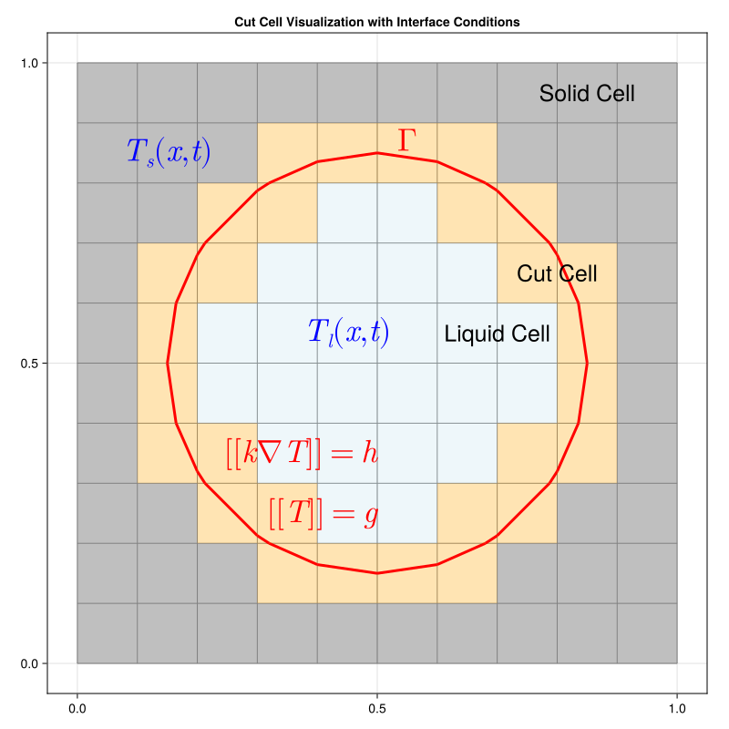
4 Equations: Bulk & Interface \[ \begin{cases} \frac{\partial T_s}{\partial t} = \alpha_s \nabla^2 T_s \quad \text{in } \Omega_s \\ \frac{\partial T_l}{\partial t} = \alpha_l \nabla^2 T_l \quad \text{in } \Omega_l \\ \end{cases} \]
\[ \begin{cases} \begin{aligned} T &= g(\mathbf{x}) \quad \text{on } \Gamma \\ k \nabla T \cdot \mathbf{n} &= h(\mathbf{x}) \quad \text{on } \Gamma \end{aligned} \end{cases} \]
4 Unknowns:
- Bulk temperatures: \(T_s\), \(T_l\)
- Interface temperatures: \(T_s^\Gamma\), \(T_l^\Gamma\)
Cut-Cell Discretization
For each phase, we have the heat equation: \[ \begin{aligned} \frac{\partial T_p}{\partial t} - \alpha_p \nabla \cdot (\nabla T_p) &= S_p \quad \text{in } \Omega_p \end{aligned} \]
Integrating over control volume and integrating in time:
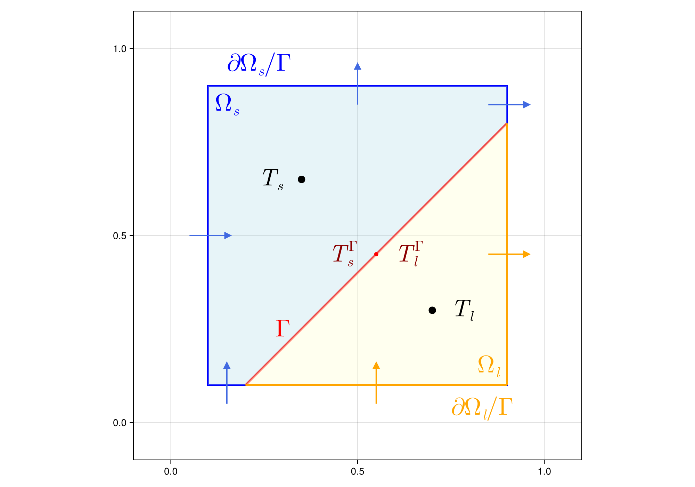
\[ \small \int_{t^n}^{t^{n+1}} \int_{\Omega_p} \frac{\partial T_p}{\partial t} \, dV dt = \int_{t^n}^{t^{n+1}} \left[ \color{blue}{\int_{\partial\Omega_p \setminus \Gamma} k_p \nabla T_p \cdot \mathbf{n}_p \, dS} + \color{red}{\int_{\Gamma} k_p \nabla T_p \cdot \mathbf{n}_p \, dS} + \int_{\Omega_p} S_p \, dV \right] dt \]
Cut-Cell Discretization
For each phase (solid, liquid), the discretization leads to: \[ V_p(T_p^{n+1} - T_p^n) = \Delta t \left[ \sum_{f \in \text{reg}} k_p A_f \nabla_f(\tilde{T}_p) \cdot \mathbf{n_f}+ F_p^{\Gamma} + S_p V_p \right] \]
Where:
- Fluxes are computed using Stokes’ theorem on staggered cells \(\int_{\Omega_{f}} \nabla T \, dV = \int_{\partial\Omega_{f}} T \mathbf{n} \, dS\)
Boundary conditions at the interface are defined as:
Temperature Jump: \[ \begin{aligned} T &= g \quad \text{on } \Gamma \\ T_s^\Gamma - T_l^\Gamma &= g(\mathbf{x}) \end{aligned} \]
Heat Flux Jump: \[ \begin{aligned} k \nabla T \cdot \mathbf{n} &= h(\mathbf{x}) \quad \text{on } \Gamma \\ F_s^\Gamma - F_l^\Gamma &= A_\Gamma h(\mathbf{x}) \end{aligned} \]
Discretized System
\[ \begin{bmatrix} M_{\text{bulk}}^s & M_{\text{int}}^s & 0 & 0 \\ I & 0 & - I & 0 \\ 0 & 0 & M_{\text{bulk}}^l & M_{\text{int}}^l \\ F_{\text{bulk}}^s & F_{\text{int}}^s & F_{\text{bulk}}^l & F_{\text{int}}^l \end{bmatrix} \begin{bmatrix} T^{n+1}_{\text{s}} \\ T^{n+1,\Gamma}_{\text{s}} \\ T^{n+1}_{\text{l}} \\ T^{n+1,\Gamma}_{\text{l}} \end{bmatrix} = \begin{bmatrix} \text{RHS}_s \\ g \\ \text{RHS}_l \\ A_\Gamma h \end{bmatrix} \]
- Implicit time-stepping
- Coupling between bulk and interface terms
- Enforce boundary conditions directly in the system
- ⚠️ No need for ghost cells or extrapolation
Validation Case: 2D Two-Phase Heat Equation
\[ \begin{aligned} \frac{\partial T_p}{\partial t} - \nabla \cdot (k_p \nabla T_p) &= 0 \quad \text{in } \Omega_p \\ T_s - \beta_l T_l &= 0 \quad \text{on } \Gamma, \\ k_s \nabla T_s \cdot \mathbf{n} - k_l \nabla T_l \cdot \mathbf{n} &= 0 \quad \text{on } \Gamma, \\ \end{aligned} \]
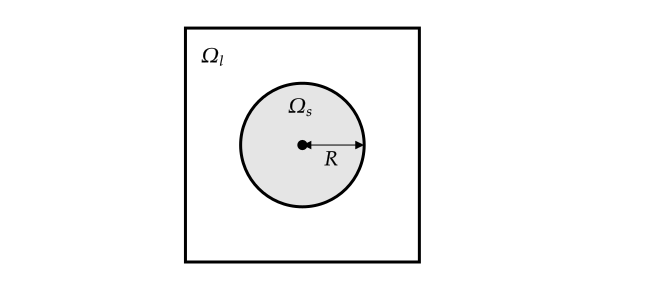
Analytical solution: \[ \small \begin{aligned} T_s(r,t) &= \frac{4 T_{s,0} k_s k_l^2 \beta_l}{\pi^2 R} \int_0^{\infty} \exp{(-k_s u^2 t)} \frac{J_0(ur) J_1(uR)}{u^2(\Phi^2(u) + \Psi^2(u))} du \\ T_l(r,t) &= \frac{2 T_{l,0} k_s \sqrt{k_l} \beta_l}{\pi} \int_0^{\infty} \exp{(-k_s u^2 t)} \frac{J_1(uR)(J_0(k ur)\Phi(u) - Y_0(k ur)\Psi(u))}{u(\Phi^2(u) + \Psi^2(u))} du \end{aligned} \]
Validation: 2D Two-Phase Heat Equation
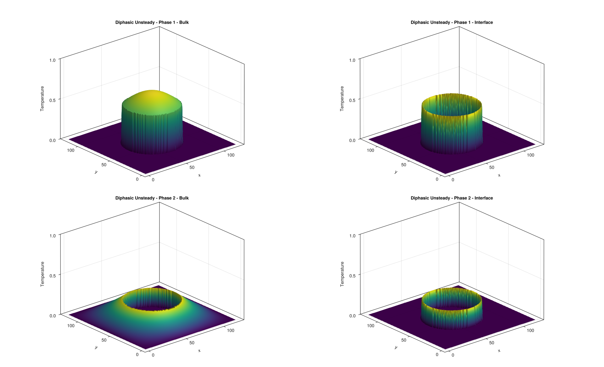
Validation: 2D Two-Phase Heat Equation
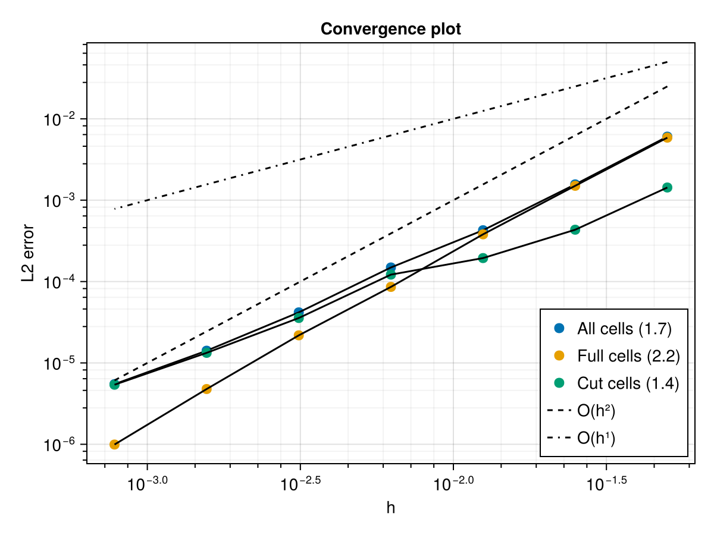
Cut Cell Method for moving interfaces
Space-Time Approach
- Combine time with spatial domain (extrude cells across \(\Delta t\))
- Discrete events (fresh/dead cells) carefully handled
From 1D Space to 2D Space-Time
Space-Time Discretization
Reynolds Transport Theorem:
\[\frac{d}{dt} \int_{\Omega(t)} f\, dV = \int_{\Omega(t)} \frac{\partial f}{\partial t}\, dV + \int_{\partial \Omega(t)} \bigl(\mathbf{w}\cdot\mathbf{n}\bigr) f\, dS\]
Applied to heat equation in moving domain:
\[ \left[ \int_{\Omega_p(t)}\! T_p\,dV\right]_{t_{n}}^{t^{n+1}} = \int_{t^n}^{t^{n+1}}\int_{\partial\Omega_p(t)} k_p \nabla T_p \cdot \mathbf{n} dS dt + \int_{t^n}^{t^{n+1}}\int_{\partial\Omega_p(t)} \Bigl(\mathbf{w}\!\cdot\!\mathbf{n}\Bigr) T_p\,dS dt \]
- Same discretization as before
- Additional term for moving interface
VOF Advection vs. Iterative Method
Traditional VOF Approach:
\[ \frac{\partial c}{\partial t} + \mathbf{u} \cdot \nabla c = 0 \]
- Challenges:
- Velocity extension
- Decoupling of interface and temperature field
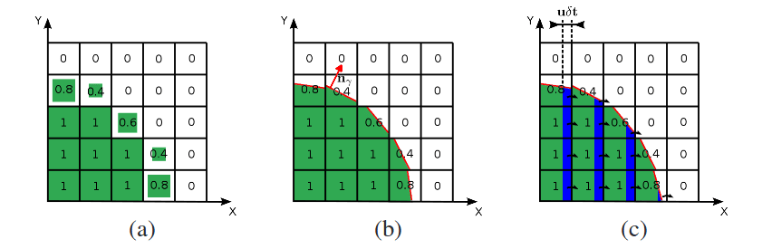
Our Iterative Method:
\[ \rho L \frac{\partial s}{\partial t} - k \nabla T \cdot\mathbf{n} = 0 \leftrightarrow F(s,T) = 0 \]
- Advantages:
- Enforces conservation localy
- Interface update coupled with temperature field
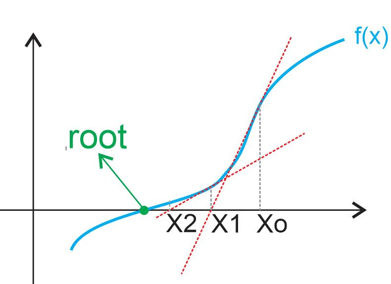
Newton Iteration for Interface update
Interface Representation: Height function \(y=s(x)\) with position \(\mathbf{x}_\Gamma\)
Stefan Condition as Root-Finding Problem: \[\rho\,L\,\dot{s} - k \nabla T\cdot\mathbf{n} = 0 \quad \Rightarrow \quad F(\mathbf{x}_\Gamma) = 0\]
Newton Iteration Method: \[\mathbf{x}_\Gamma^{n+1,(k+1)} = \mathbf{x}_\Gamma^{n+1,(k)} - \left(\frac{\partial F^{(k)}}{\partial \mathbf{x}_\Gamma}\right)^{-1}F(\mathbf{x}_\Gamma^{n+1,(k)})\]
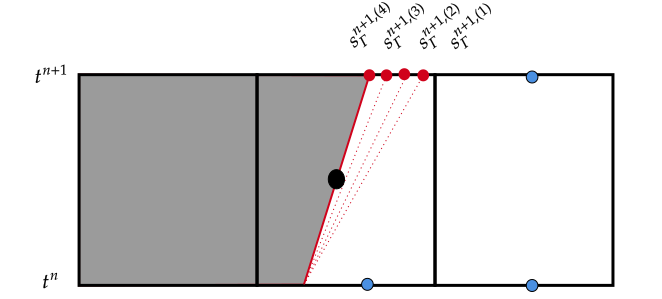
- Iterate until convergence: \(\|F(\mathbf{x}_\Gamma^{n+1,(k)})\| < \epsilon\)
- Each iteration requires solving temperature field on updated domain
Test Case: 2D Two-Phase Stefan Problem
- Fusion of a solid slab
- Initial position off equilibrium
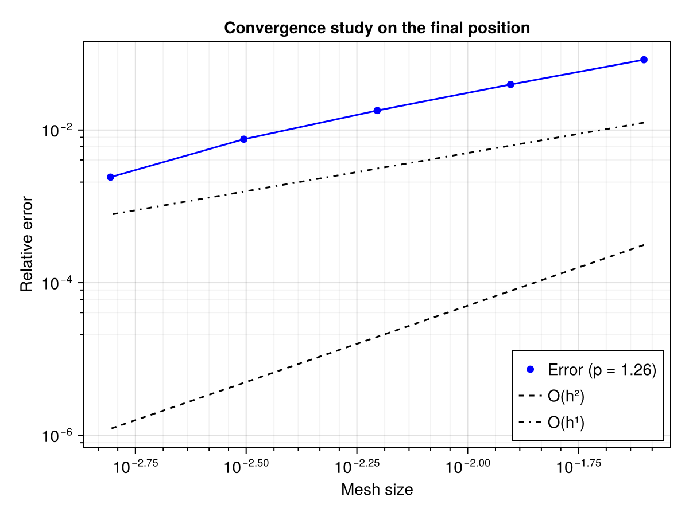
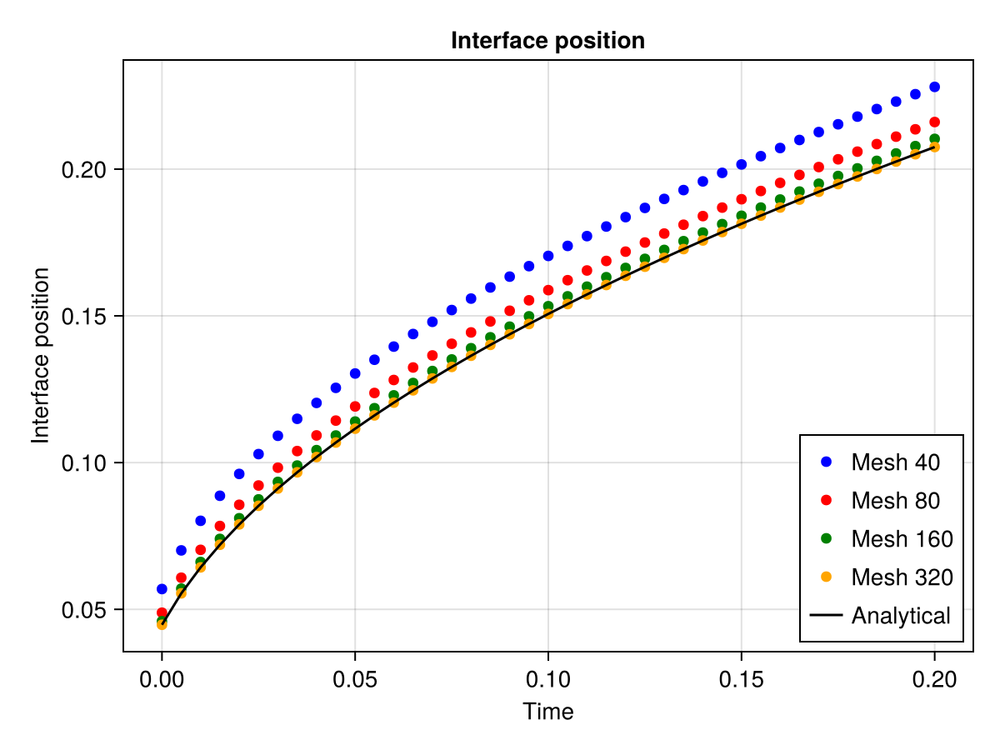
Convergence Properties
- Linear convergence observed (\(O(k^{1.1})\))
- Efficient with good initial guess (extrapolation or velocity-based)
Residuals (log10)
Mullins-Sekerka Instability Test
Interface Perturbation
- Small waves on solid-liquid interface
- Some modes grow, some decay
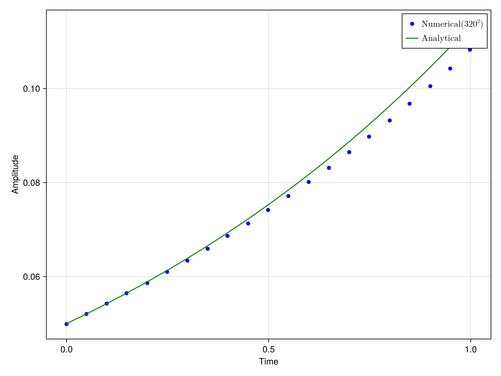
Pattern Formation
- Initial small perturbation
- Develops into dendrite pattern
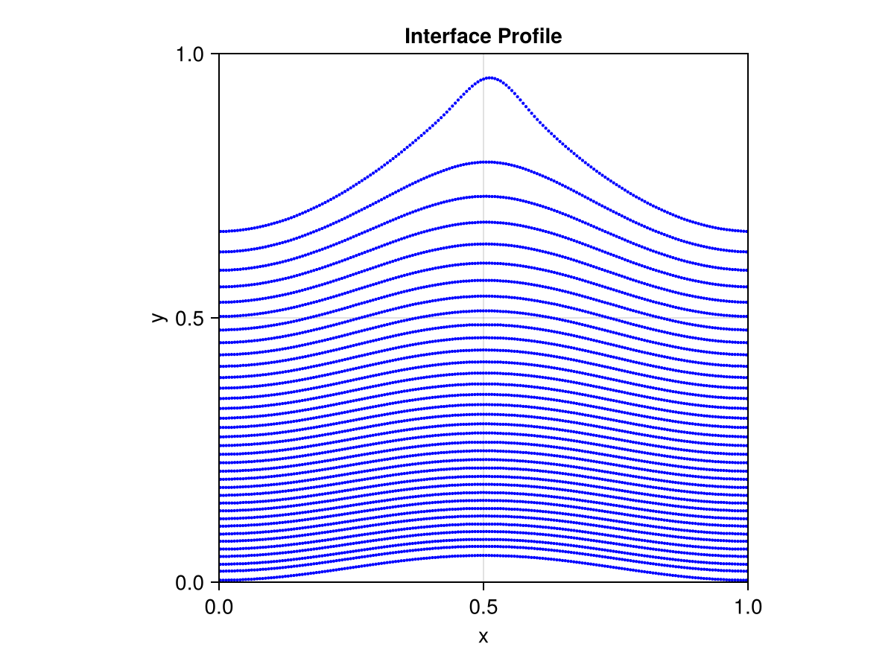
Conclusion & Perspectives
Key Achievements
- Cut-cell method for two-phase problems
- Conservation guaranteed
- Superlinear convergence
- No interpolation needed for boundary conditions
- Space-time finite volume for moving interfaces
- Properly handles discrete events (fresh/dead cells)
- Maintains conservation
- Implicit interface representation
- No velocity extension, no reinitialization
- Newton iteration for interface update
- Coupling between interface update and temperature field
Questions ?
Thank you for your attention!
Appendix
Future Work
- Front-tracking approach for interface representation :
- Interface represented by a set of markers
- Optimization problem to update interface position
- Non-linear least squares solver for interface update
- Extension to Navier-Stokes equations for two-phase flows :
- Coupling with momentum equations
- Implicit treatment of interface coupling
- Fully coupled system of equations
- Preconditioning strategies and parallelization :
- Efficient solvers for large systems
- Parallel implementation
Fixed-Point Theoretical Framework
Fixed-Point Formulation: \(\mathbf{x}_\Gamma^{n+1,(k+1)} = f(\mathbf{x}_\Gamma^{n+1,(k)})\)
Banach Fixed-Point Theorem: Guarantees convergence if \(f\) is contractive. Existence (and uniqueness) of fixed point \(\mathbf{x}_\Gamma^{n+1}\).
Contraction Property: \(\|f(\mathbf{x}_1) - f(\mathbf{x}_2)\| \leq L\|\mathbf{x}_1 - \mathbf{x}_2\|,\quad L < 1\)
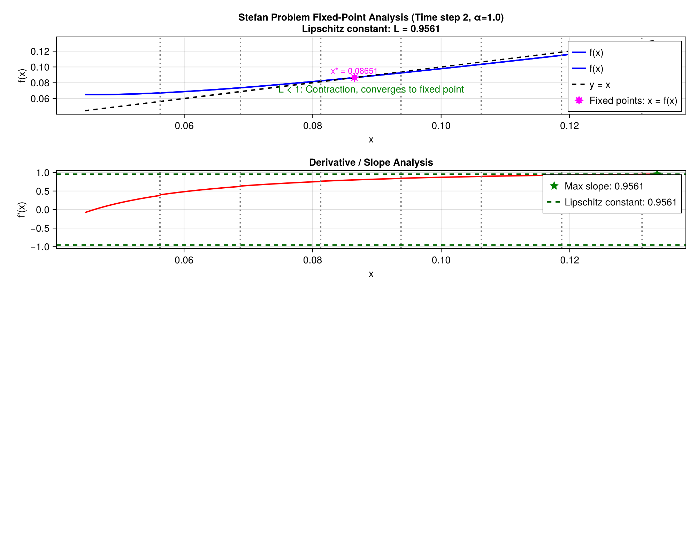
Front-Tracking Enhancement
- Interface represented by a set of markers with positions \(\vec{X}_I\)
- Interface update formulated as optimization problem: \(\mathbf{X}^{n+1} = \text{argmin} \left\{ \sum_i \left| F_i \right|^2 \right\}\)
Where \(F_i = \rho L (V_i^{n+1} - V_i^{n}) - \nabla T \cdot\mathbf{n}\) is the Stefan condition residual

- Solution via non-linear least squares:
- Jacobian matrix: \(J_{i,J} = \rho L \frac{\partial V_i^{n+1}}{\partial X_J}\)
- Levenberg-Marquardt update: \(\mathbf{X}^{n+1} = \mathbf{X}^{n} - (J^T J + \lambda D)^{-1} J^T \mathbf{F}\)
Appendix : Gradient Calculation at the interface
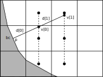
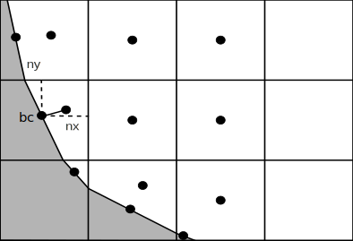
2nd order gradient calculation at the interface using Johansen and Colella method
Gradient calculation at the interface using our cut-cell method (1st order)
Appendix: Flux Computation Using Stokes’ Theorem
Stokes’ Theorem Application:
\[\int_{\Omega_{f}} \nabla T \, dV = \int_{\partial\Omega_{f}} T \mathbf{n} \, dS\]
- Create staggered control volume around each face
- Compute gradient as surface integral:
\[\nabla_f T \approx \frac{1}{V_f} \int_{\partial\Omega_{f}} T \mathbf{n} \, dS\]
- Preserves conservation
- Handles irregular geometries naturally
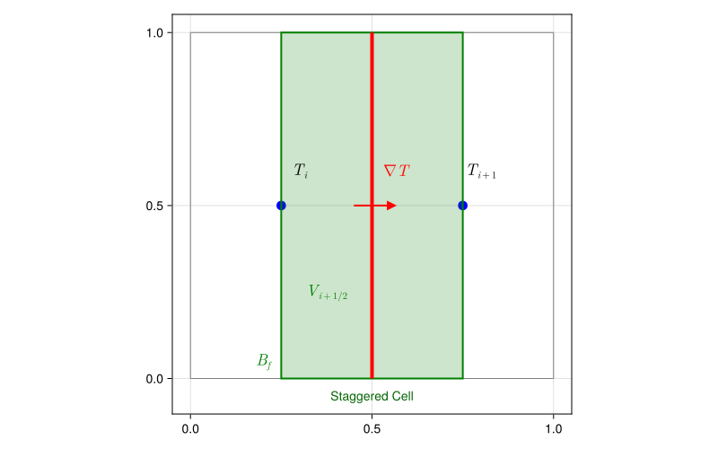
Practical Implementation:
\[\int_{\partial\Omega_{f}} T \mathbf{n} \, dS \approx \sum_{e \in \partial\Omega_f} T_e A_e \mathbf{n}_e\]
- Second-order for regular cells
- First-order for cut cells
Appendix : Prescribed Interface Motion
- No parasitic oscillations
- Minimium cell number to resolve the interface : \(6 \times 6\) cells
References
Chen, S., Barry Merriman, S. Osher, and Peter Smereka. 1997. “A Simple Level Set Method for Solving Stefan Problems.” Journal of Computational Physics 135: 8–29. https://api.semanticscholar.org/CorpusID:15053906.
Mullins, W. W. 1964. “Stability of a Planar Interface During Solidification of a Dilute Binary Alloy.” In. https://api.semanticscholar.org/CorpusID:100344661.
Polyanin, Andrei, and Vladimir Nazaikinskii. 2016. Handbook of Linear Partial Differential Equations for Engineers and Scientists, Second Edition. Handbook of Linear Partial Differential Equations for Engineers and Scientists, Second Edition. https://doi.org/10.1201/b19056.
Popinet, Stéphane. 2009. “An Accurate Adaptive Solver for Surface-Tension-Driven Interfacial Flows.” Journal of Computational Physics 228 (16): 5838–66. https://doi.org/https://doi.org/10.1016/j.jcp.2009.04.042.
Quirós Rodríguez, Alejandro, Tomas Fullana, Vincent Le Chenadec, and Taraneh Sayadi. 2024. “A Conservative Cartesian Cut-Cell Method for Mixed Boundary Conditions and the Incompressible Navier-Stokes Equations on Staggered Meshes.” https://doi.org/10.2139/ssrn.4716171.
Remmerswaal, Ronald A., and Arthur E. P. Veldman. 2022. “A Sharp, Structure Preserving Two-Velocity Model for Two-Phase Flow.” https://arxiv.org/abs/2210.08916.
Stefan, Josef. 1891. “Ueber Die Theorie Der Eisbildung, Insbesondere über Die Eisbildung Im Polarmeere.” Annalen Der Physik 278: 269–86. https://api.semanticscholar.org/CorpusID:120682366.
TwoPhase. 2025. “Two Phase Heat Equation with Homothetic Temperature Jump BC.”
Weymouth, Gabriel, and Dick Yue. 2010. “Conservative Volume-of-Fluid Method for Free-Surface Simulations on Cartesian-Grids.” J. Comput. Physics 229 (April): 2853–65. https://doi.org/10.1016/j.jcp.2009.12.018.
References
TwoPhase (2025) Chen et al. (1997) Mullins (1964) Polyanin and Nazaikinskii (2016) Popinet (2009) Remmerswaal and Veldman (2022) Stefan (1891) Weymouth and Yue (2010) Quirós Rodríguez et al. (2024)
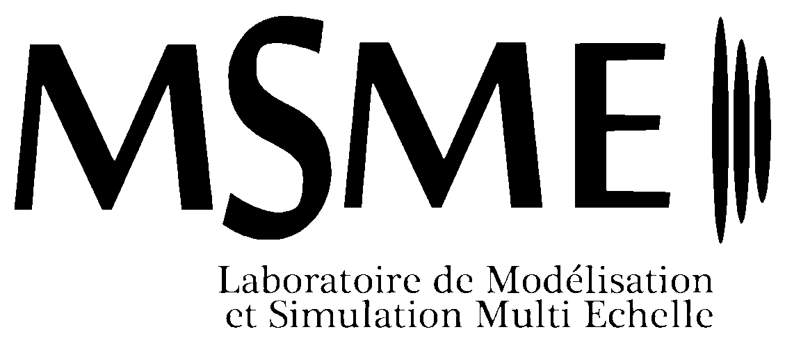
© 2025 L. Libat, E. Chénier, C.Selçuk, V. Le Chenadec